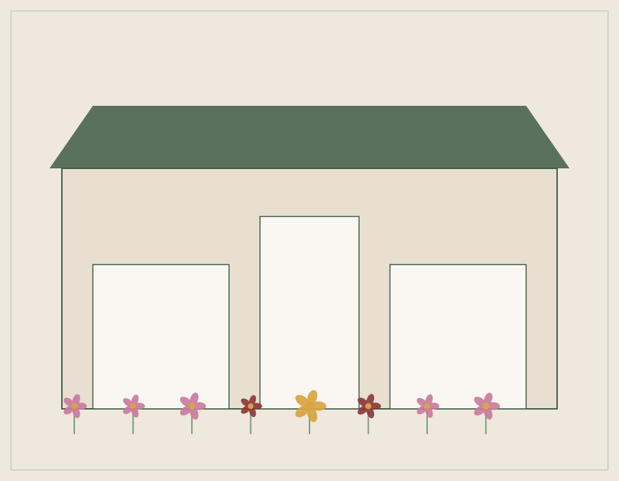

De uma bancada de feira a uma loja completa
A Flora & Cia nasceu em 2014, quando Dona Conceição começou a vender buquês montados à mão em uma pequena bancada na feira do bairro. O cuidado com cada flor e a atenção aos detalhes logo conquistaram clientes fiéis.
Em 2018, a família abriu as portas da primeira loja física, e hoje contamos com uma equipe de floristas apaixonadas que mantêm viva a mesma essência artesanal do início — agora também disponível pelo WhatsApp, para facilitar a vida de quem quer presentear com flores sem sair de casa.